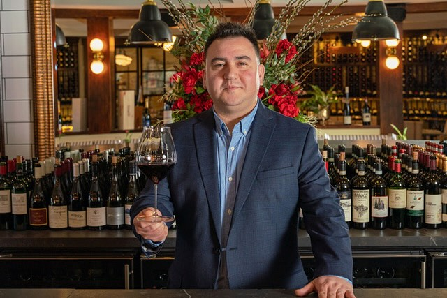
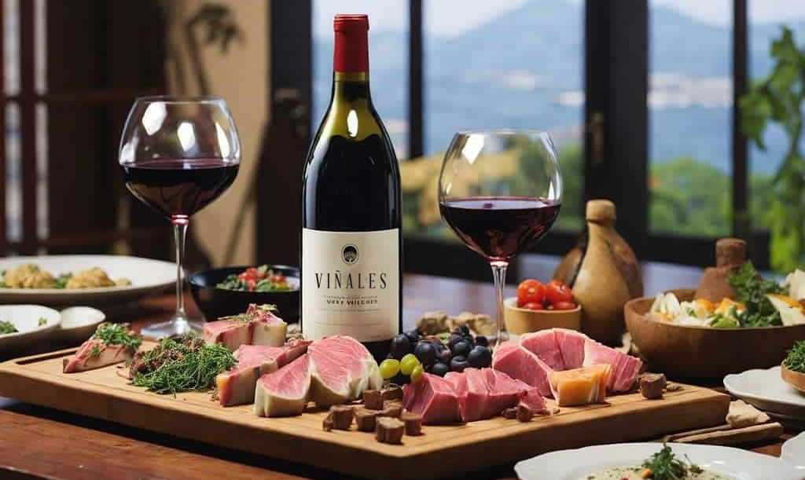
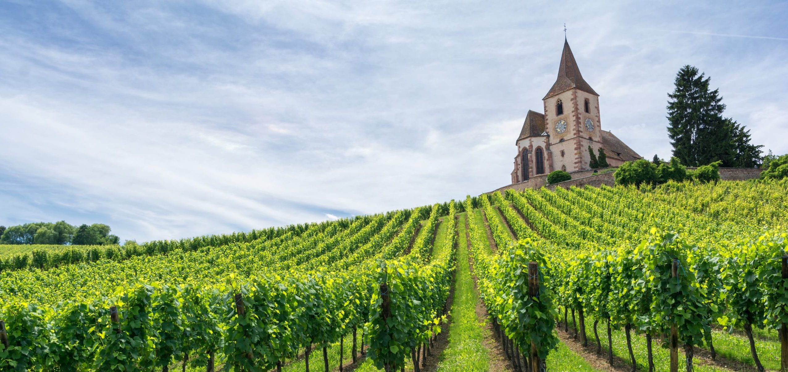
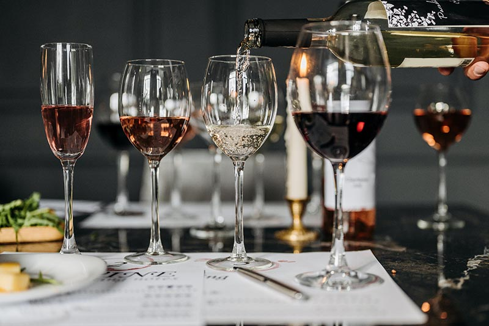
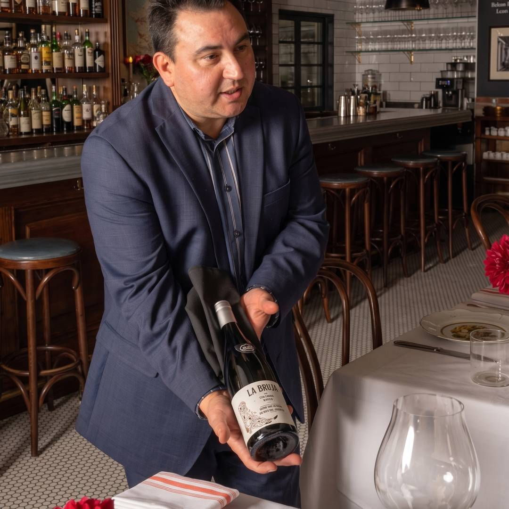
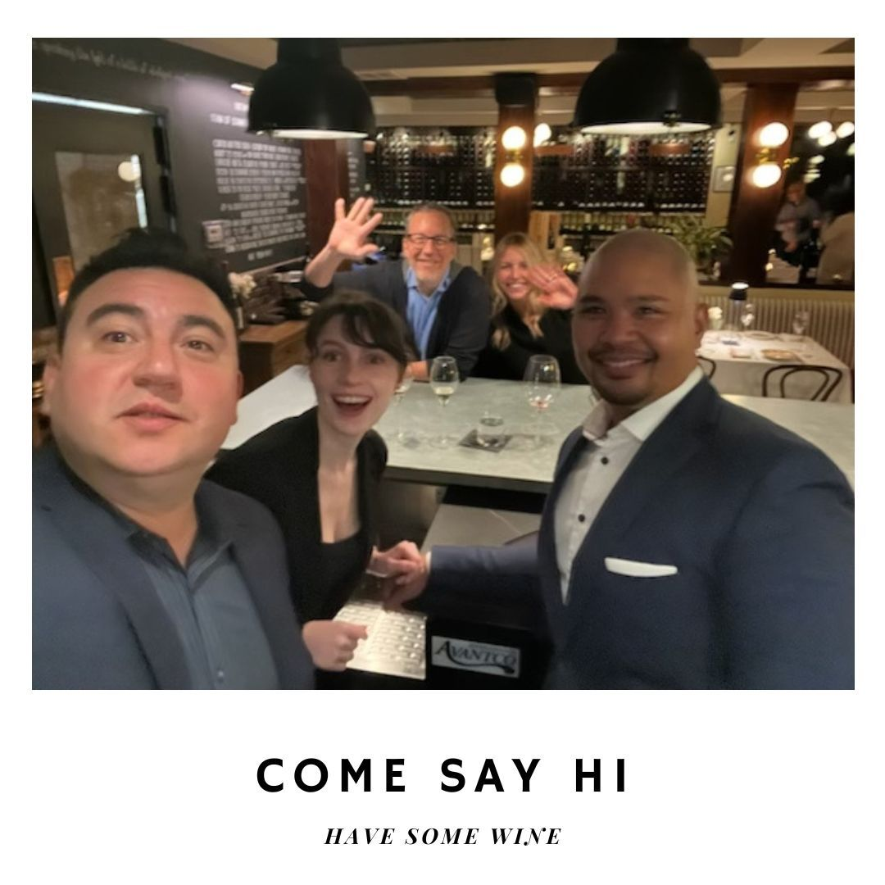

Servicios
Disfruta de una experiencia única con catas privadas en tu
hogar, empresa o evento especial. Selecciono personalmente los
vinos y creo maridajes personalizados para que explores el mundo
del vino de forma sensorial y entretenida.
Ejemplo: Cata temática de vinos italianos con maridaje de quesos y charcutería artesanal para un grupo de 10 personas.
Ejemplo: Cata temática de vinos italianos con maridaje de quesos y charcutería artesanal para un grupo de 10 personas.
Asesoro establecimientos gastronómicos para optimizar sus cartas
de vino, crear experiencias memorables para los clientes y
capacitar al equipo en servicio de bebidas.
Ejemplo: Rediseño completo de la carta de vinos de un restaurante mediterráneo con énfasis en vinos locales y sostenibles.
Ejemplo: Rediseño completo de la carta de vinos de un restaurante mediterráneo con énfasis en vinos locales y sostenibles.
Capacito al personal de servicio en técnicas de atención,
lenguaje del vino y maridaje para mejorar la experiencia del
cliente. Adaptado a todos los niveles de conocimiento.
Ejemplo: Programa de 4 sesiones para staff de sala y baristas sobre servicio de vino por copa, decantación y recomendaciones de maridaje.
Ejemplo: Programa de 4 sesiones para staff de sala y baristas sobre servicio de vino por copa, decantación y recomendaciones de maridaje.
Ofrezco gestión profesional de colecciones de vino:
organización, inventario, rotación y asesoría en nuevas
adquisiciones. Ideal para coleccionistas y amantes del vino.
Ejemplo: Organización y digitalización del inventario de una cava privada con más de 200 etiquetas premium.
Ejemplo: Organización y digitalización del inventario de una cava privada con más de 200 etiquetas premium.
Talleres diseñados para entusiastas del vino que desean aprender
sobre cata, regiones vinícolas, estilos y conservación de vinos.
Accesibles, prácticos y entretenidos.
Ejemplo: Curso introductorio de 3 días sobre vinos del Nuevo Mundo para principiantes, con degustaciones guiadas.
Ejemplo: Curso introductorio de 3 días sobre vinos del Nuevo Mundo para principiantes, con degustaciones guiadas.
Blog / Recomendaciones

Maridaje perfecto
Cómo lograr el equilibrio ideal entre vinos y platos.

Regiones vinícolas
Explora las mejores zonas productoras de vino del mundo.

Consejos de cata
Tips prácticos para disfrutar aún más del vino.
Galería


Testimonios
“La pasión de Juan Pablo hizo que nuestra cata fuera inolvidable.”
- María R., San Francisco“Profesionalismo y carisma. ¡Una noche memorable!”
- Alejandro M., Los Ángeles“Una experiencia única. Aprendimos y disfrutamos muchísimo.”
- Carla D., Napa Valley